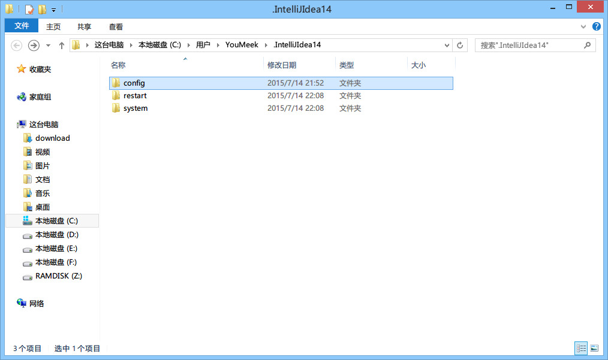
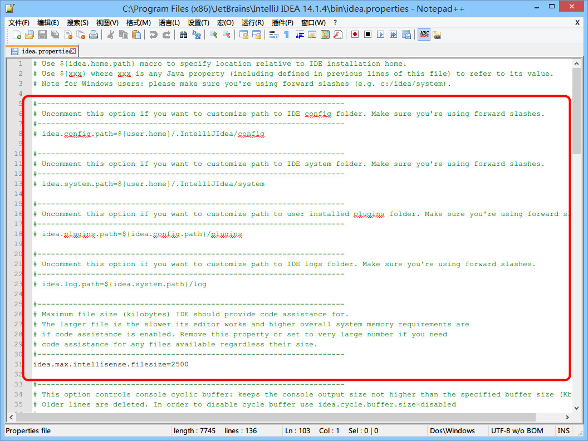

IntelliJ IDEA 相关核心文件和目录介绍
安装目录介绍

- IntelliJ IDEA 的安装目录并不复杂，上图为最常改动的 bin 目录，经常会改动的文件或是必须介绍就是如图红色框中的几个。
idea.exe文件是 IntelliJ IDEA 32 位的可行执行文件，IntelliJ IDEA 安装完默认发送到桌面的也就是这个执行文件的快捷方式。idea.exe.vmoptions文件是 IntelliJ IDEA 32 位的可执行文件的 VM 配置文件，具体配置修改会下面进行专门讲解。idea64.exe文件是 IntelliJ IDEA 64 位的可行执行文件，要求必须电脑上装有 JDK 64 位版本。64 位的系统也是建议使用该文件。idea64.exe.vmoptions文件是 IntelliJ IDEA 64 位的可执行文件的 VM 配置文件，具体配置修改会下面进行专门讲解。idea.properties文件是 IntelliJ IDEA 的一些属性配置文件，具体配置修改会下面进行专门讲解。
强烈推荐不要直接修改安装目录下的这几个配置文件，因为 IDEA 升级/重装可能会导致修改完全失效！
强烈推荐使用 IDEA 自带菜单中的 Help -> Edit Custom VM Options 和 Help -> Edit Custom Properties 来进行个性化配置！
设置目录介绍

- 不管你使用的是哪个操作系统，IntelliJ IDEA 的设置目录命名是统一的、有规律：.IntelliJIdea14。其中 14 表示大版本号，如果你电脑上还同时装有 13 的版本，那则还应该会有一个：
.IntelliJIdea13的设置目录，其他版本道理一样。- 在三大主流的操作系统上该文件夹都在当前用户的 Home 目录，Windows 上即
%userprofile%，Linux 和 Mac 上即~- 对于这个设置目录有一个特性，就是你删除掉整个目录之后，重新启动 IntelliJ IDEA 会再自动帮你再生成一个全新的默认配置，所以很多时候如果你把 IntelliJ IDEA 配置改坏了，没关系，删掉该目录，一切都会还原到默认，我是很建议新人可以多自己摸索 IntelliJ IDEA 的配置，多几次还原，有助于加深对 IntelliJ IDEA 的了解。
config目录是 IntelliJ IDEA 个性化化配置目录，或者说是整个 IDE 设置目录。也是我个人认为最重要的目录，没有之一，如果你还记得安装篇的介绍的时候，安装新版本的 IntelliJ IDEA 会自动扫描硬盘上的旧配置目录，指的就是该目录。这个目录主要记录了：IDE 主要配置功能、自定义的代码模板、自定义的文件模板、自定义的快捷键、Project 的 tasks 记录等等个性化的设置。system目录是 IntelliJ IDEA 系统文件目录，是 IntelliJ IDEA 与开发项目一个桥梁目录，里面主要有：缓存、索引、容器文件输出等等，虽然不是最重要目录，但是也是最不可或缺目录之一。
配置文件常见修改内容说明

- 上图是 64 位可执行文件的 JVM 配置文件内容，如果你是 32 位的系统你应该修改的是
idea.exe.vmoptions文件里面的内容，但是由于 32 位系统内存一般都是 2G 左右的，所以也没有多大空间可以调整，所以一般无需调整的。- 修改的原则主要是根据自己机器的内存情况来判断的，我个人是建议 8G 以下的机子或是静态页面开发者都是无需修改的。如果你是开发大型项目、Java 项目或是 Android 项目，并且内存大于 8G，建议进行修改，常修改的就是下面 4 个参数，我这里主要以我的机子会例进行建议，每个人机子情况不一，这里也只是做一个引子，最好的调整方式是你可以根据 jconsole 这类工具进行观察后个性化调整。
- 强烈推荐使用 IDEA 自带菜单中的
Help -> Edit Custom VM Options来进行个性化配置，而不是直接修改安装目录中的该文件！
-Xms128m，16 G 内存的机器可尝试设置为-Xms512m-Xmx750m，16 G 内存的机器可尝试设置为-Xmx1500m-XX:MaxPermSize=350m，16G 内存的机器可尝试设置为-XX:MaxPermSize=500m-XX:ReservedCodeCacheSize=225m，16G 内存的机器可尝试设置为-XX:ReservedCodeCacheSize=500m

- 上图是 IntelliJ IDEA 一些属性配置，没有 32 位和 64 位之分，修改原则主要根据个人对 IntelliJ IDEA 的个性化配置情况来分析。
- 强烈推荐在阅读了安装目录中的带注释的配置文件后，使用 IDEA 自带菜单中的
Help -> Edit Custom Properties来进行个性化配置！- 常修改的就是下面 4 个参数：
idea.config.path=${user.home}/.IntelliJIdea/config，该属性主要用于指向 IntelliJ IDEA 的个性化配置目录，默认是被注释，打开注释之后才算启用该属性，这里需要特别注意的是斜杠方向，这里用的是正斜杠。idea.system.path=${user.home}/.IntelliJIdea/system，该属性主要用于指向 IntelliJ IDEA 的系统文件目录，默认是被注释，打开注释之后才算启用该属性，这里需要特别注意的是斜杠方向，这里用的是正斜杠。如果你的项目很多，则该目录会很大，如果你的 C 盘空间不够的时候，还是建议把该目录转移到其他盘符下。idea.max.intellisense.filesize=2500，该属性主要用于提高在编辑大文件时候的代码帮助。IntelliJ IDEA 在编辑大文件的时候还是很容易卡顿的。idea.cycle.buffer.size=1024，该属性主要用于控制控制台输出缓存。有遇到一些项目开启很多输出，控制台很快就被刷满了没办法再自动输出后面内容，这种项目建议增大该值或是直接禁用掉，禁用语句idea.cycle.buffer.size=disabled。
设置目录进行多台设置同步化处理

- 上图是我的个性化配置目录，我是存放在 F 盘，同时该目录也是在 360 同步盘中。这样做主要是为了让我的多台设置可以同时使用一个个性化配置，保证个人开发习惯，额外作用就是在服务器上一个备份作用。
- 设置方式很简单，修改
idea.properties属性文件中的idea.config.path值，我的机器为：idea.config.path=F:/360SycDir/idea_config/config
Mac 的配置文件保存路径
- 下面内容中：
XXXXXX，表示 IntelliJ IDEA 的版本号，IntelliJ IDEA 的配置目录是跟版本号有关系的。 /Users/你的用户名/Library/Application Support/IntelliJIdeaXXXXXX，用于保存安装的插件/Users/你的用户名/Library/Caches/IntelliJIdeaXXXXXX，用于保存缓存、日志、以及本地的版本控制信息（local history 这个功能）/Users/你的用户名/Library/Preferences/IntelliJIdeaXXXXXX，用于保存你的个人配置，等价于 Windows 下的config目录
Linux 的配置文件保存路径
- 跟 Windows 的目录命名习惯一样，所以你可以直接按 Windows 的配置目录名称来全盘搜索。
Mac 下修改 VM 参数
方法一（官方推荐）
大部分情况下，修改 VM 参数可以使用 IDEA 自带的选项：
Help -> Edit Custom VM Options
这个选项会自动帮你在正确的位置用正确的名字新建一个 VM 参数配置文件，并在当前 IDEA 窗口自动打开。我们只需要按需编辑，保存后重启即可。
建议在编辑的时候查看一下文件的原始路径，以备改错参数导致无法启动时恢复使用。
这种方法修改不会由于升级 IDEA 导致修改被还原。
方法二
手动修改个人配置下的 idea.vmoptions 文件，完整的路径为：
/Users/你的用户名/Library/Preferences/IntelliJIdeaXXXXXX/idea.vmoptions
或者可以简写为：
~/Library/Preferences/IntelliJIdeaXXXXXX/idea.vmoptions
如果该文件不存在，按照名称新建一个即可。
推荐直接使用命令行进行编辑。
Finder 中进入该文件夹的方法是：
- 打开 Finder
- 按快捷键 Command + Shift + G
- 在弹出窗口中输入
~/Library/Preferences/ - 找到对应版本的
IntelliJIdea文件夹 - 新建或修改
idea.vmoptions文件